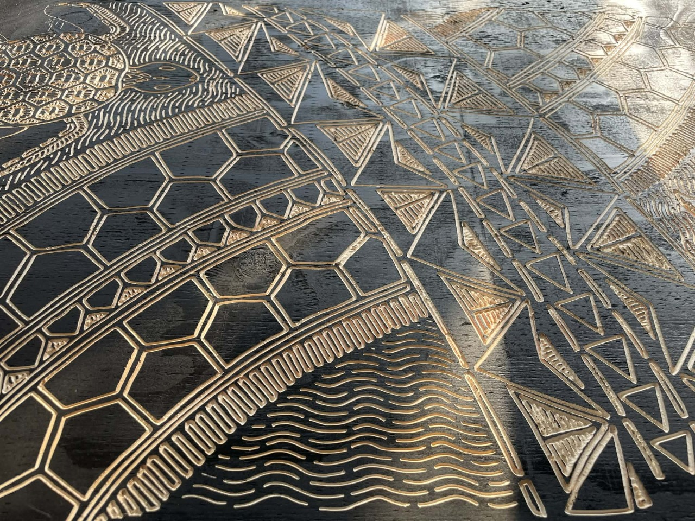
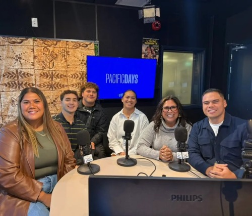
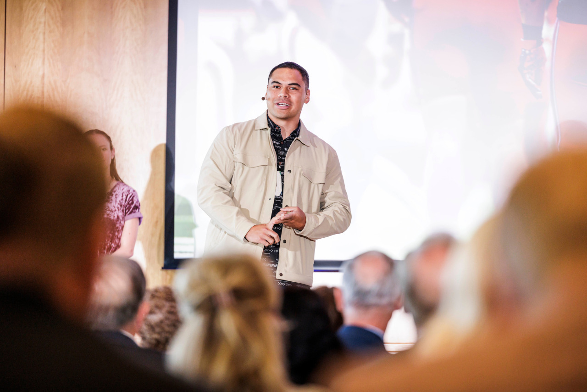
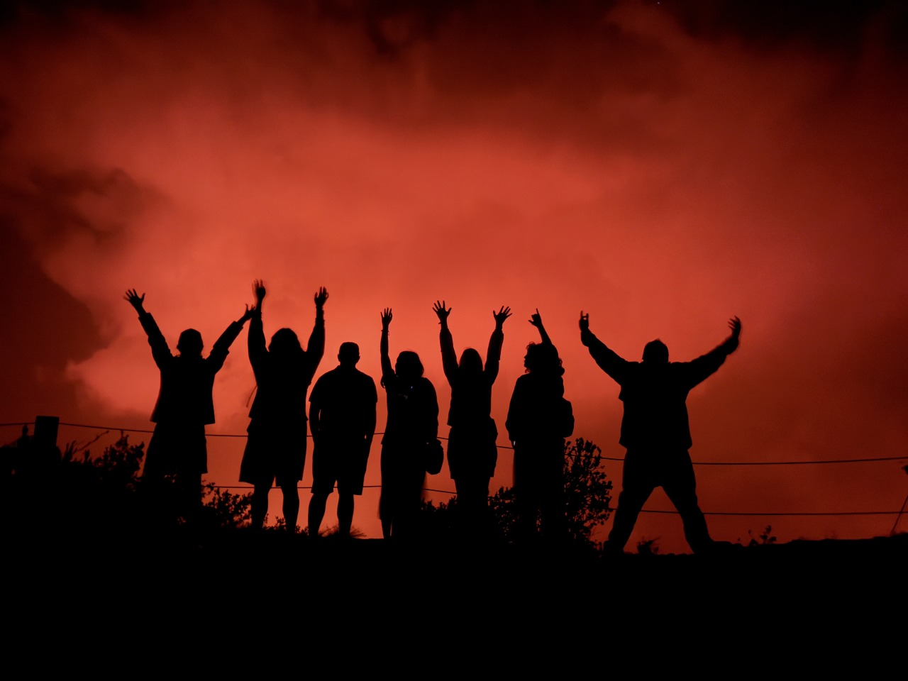
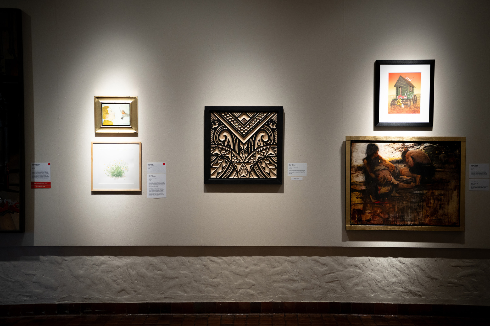
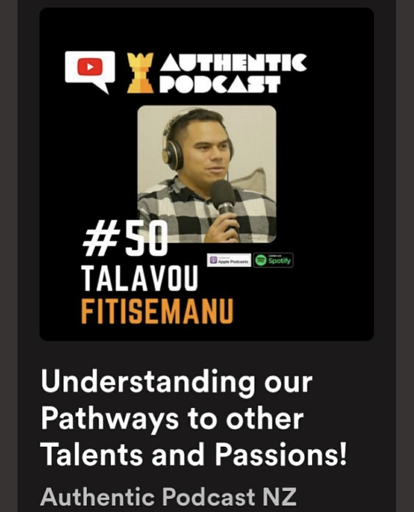
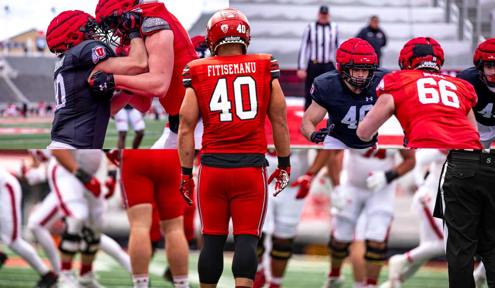
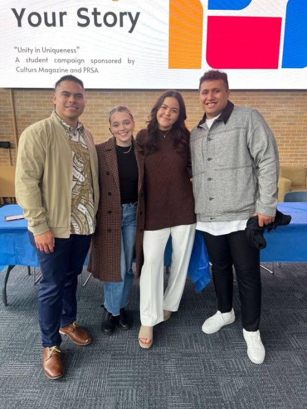
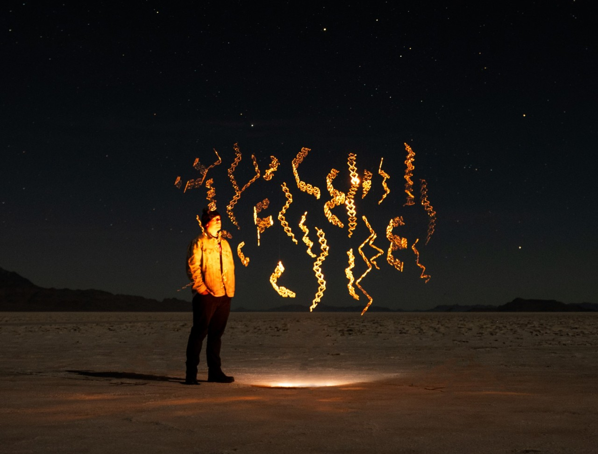
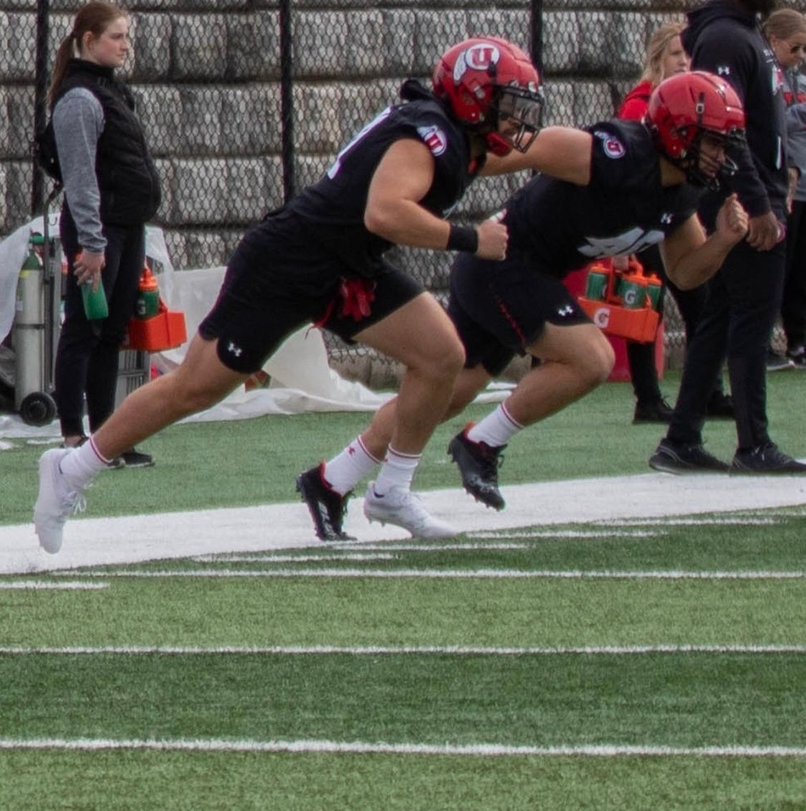

Talofa
Fitisemanu carries his work as an artist like a canoe across the ocean of experiences. His studies in art at Brigham Young University strengthened his ability to navigate both tradition and innovation, but every project remains a voyage undertaken with others. Guided by ancestral protocols and the relational space of vā, his practice acknowledges that creativity is never a solitary crossing. Each endeavor moves forward with a team—like a fleet of outriggers—where stories, responsibilities, and connections are carried together across islands, cultures, and generations.
Articles












Dec 2025 – Solo Exhibition & Seminar, Provo, UT
Hosted his second annual solo exhibition and seminar titled Money, Pattern, Respect, continuing the tradition of gathering community to share art, dialogue, and cultural narratives.
Oct 2025 – Pasifika in New York City
Took his team on their first tour to the MET and organized a Polynesian conference of creatives in New York, bringing together voices across the diaspora.
Jun 2025 – Manuia Pathways, New Zealand
Led a team of college students from Harvard, Temple, and BYU to tour schools in New Zealand, sharing opportunities in America and building bridges across cultures.
Mar 2025 – BYU Hawaiian Legends Project, Hilo, HI
Collaborated with third graders to illustrate Hawaiian legends, guiding young students in visual storytelling while connecting cultural heritage with art education. Read more
Dec 2024 – First Solo Exhibition, Provo, UT
Hosted his first solo exhibition titled Celestial Navigation, welcoming 300+ people to share art and stories of his village.
Jul 2024 – Pacific Media Network, Auckland, NZ
Shared artist story on 3 radio shows across 3 countries; toured facilities and joined collaboration meetings.
May 2024 – Tiapapata Art Centre, Samoa
Exhibited traditional stone tools; weeklong travels between villages learning from master craftsmen.
May 2024 – PolyStrong Foundation, Lehi, UT
Designed 8 awards for the PolyStrong Leadership Summit & Gala, incorporating Samoan patterns.
May 2024 – Springville Museum of Art, UT
Museum debut piece Patterns of the Pacific at the 100th Annual Spring Salon Show.
Nov 2023 – Pasifika Enriching Arts of Utah, Salt Lake City
First group exhibition, showcasing wood carving with stain finish.
Oct 2023 – BYU Religious Education Student Symposium, Provo, UT
Exhibited wood carving; won Best in Show in a university-wide competition.
Aug 2020 – Dec 2021 – Snow College, Ephraim, UT
Completed Associate of Science degree; transition from athletics to art.